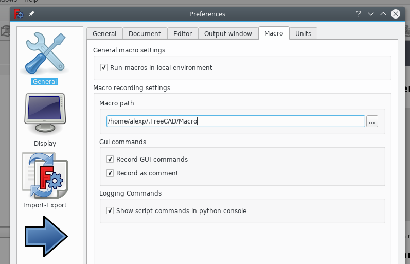

Install opencamlib
Note: After my initial tests with FreeCad, I opted for blender and the great blendercam for design and gCode generation for complex parts (like airfoils). See my motivation.
Get it here and build it. Simple cmake build.
On my linux system, after installation even after checking that everything is installen in /usr/local/lib and executing ldconfig /usr/local/lib for Freecad to find in () I got
OpenCamLib is not working!
when starting Freecad and the path workbench.
The second option is to copy the compiled librarie(s) in the macro folder. Find out the macro path in freecad preferences.

and copy
Feel free to dicuss your questions in the related discussion thread